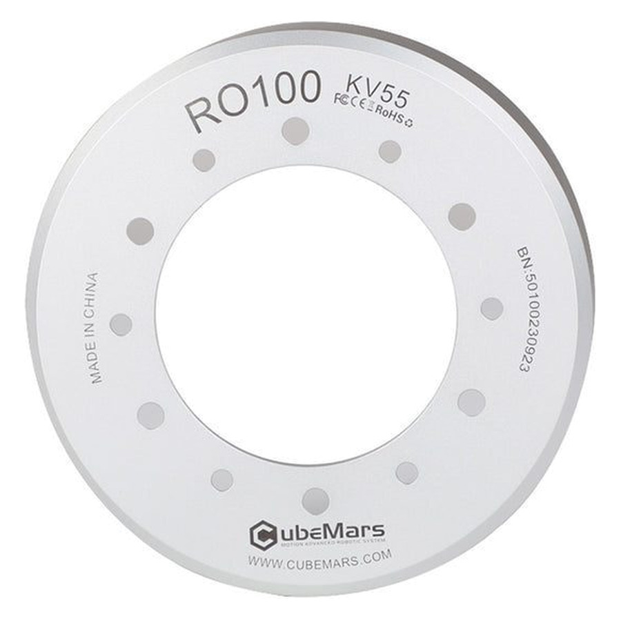

RO Series. 4 N·m rated, 12 N·m peak, Ф108.3 mm, 525 g, 48 V.
US$176.00
This is the lite, no hall configuration.
The CubeMars RO series brushless DC outer rotor torque motor is introduced to meet diverse market demands, catering to applications in exoskeleton robotics, collaborative robotic arms, as well as medical and aviation fields.
| Rated Torque (N·m) | 4 |
|---|---|
| OD (mm) | 108.3 |
| Weight (g) | 525 |
| Peak Torque (N·m) | 12 |
| Rated Voltage (V) | 48 |
| Maximum Torque Weight Ratio (N·m/kg) | 22.9 |
| Height (mm) | 28 |
| Kv (RPM/V) | 55 |
| Inertia (g·cm²) | 5290 |
| Mechanical Time Constant (ms) | 1.73 |
| Electrical Time Constant (ms) | 0.96 |
| Pole Pairs | 21 |
| Winding Type | Star |
| Operation Ambient Temperature | -20℃~50℃ |
| Hall Sensor | No |
| Temperature Sensor | No |
| Driving Way | FOC |
| Application | Cobot Arm, Exoskeleton |